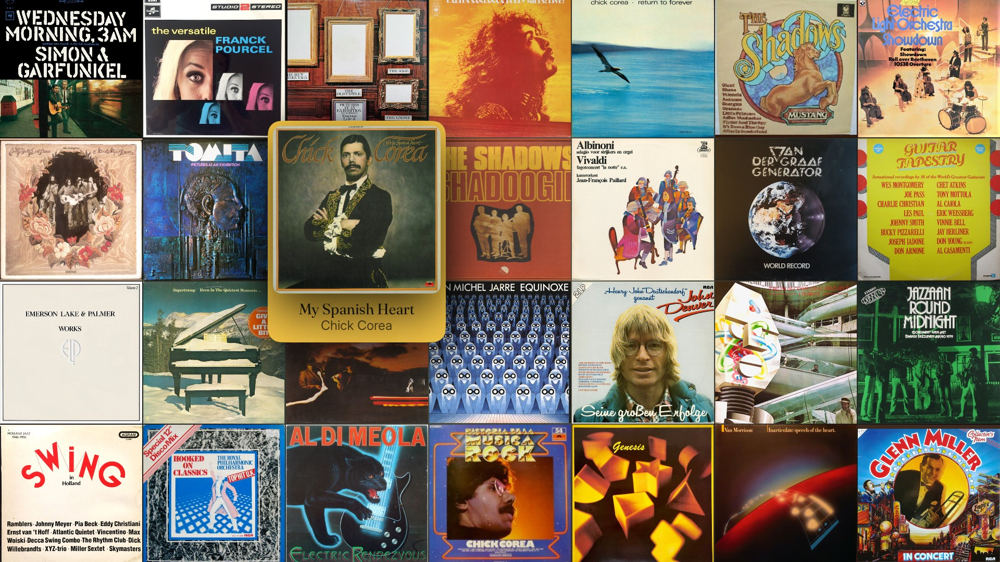

How to use
The Siri Remote, the screens and the controls.
1 Your Siri Remote
You need: an Apple TV and its Siri Remote.

- Clickpad. The pad on top of the remote. Swipe on it to move the focus, the highlighted item, then press it to choose.
- Back (‹) takes you back one step on most screens. What it does on the first screen depends on the Apple TV.
- TV. Not used by this app.
- Play/Pause. Not used by this app.
- Volume. Not used by this app.
- Mute. Not used by this app.
- Power. Not used by this app.
- Siri. Not used by this app.
The gallery has two views: “CoverFlow”, which shows one cover large in the centre, and Grid, which shows rows of covers. The record screen shows one record. The halo is the soft colour glow around the cover.
1.1 The clickpad
Swipe moves the focus. The focus is the highlight that shows which item a press will act on. Press the clickpad to choose the focused item.
1.2 Select an item
- Swipe left or right to move along a row. Swipe up or down to move to another row. The highlighted item is the focus. What you see: the highlight moves to that item.
- Press the clickpad. What you see: the item acts, for example it opens a record or turns the halo on.
1.3 Gestures on each screen
A swipe is a slide of your thumb across the clickpad. A side is one face of a record, such as “Side A”. The table shows what each gesture does on each screen.
| Gesture | “CoverFlow” | “Grid” | Record screen |
|---|---|---|---|
| Swipe left or right | Move to the previous or next record. At either end, nothing changes. | Move to the previous or next record in the row. At the start or end of each row, nothing changes. | Change side. At either end of the sides, nothing changes. |
| Swipe up | Move the focus to the toolbar, the row of controls above the covers. | Move up one row. From the top row, move the focus to the toolbar. | Show the cover full screen. If you have turned off “Engage halo automatically”, swipe up again to reach the “Halo” button. |
| Swipe down | Nothing | Move down one row, if there is a row below. | Show the tracklist. |
| Press | Open the highlighted record. | Open the highlighted record. | Go to the next side. On the last side, nothing changes. |
Use the gallery toolbar
The toolbar sits at the top of the gallery. Move left or right along it to reach a control, then press the clickpad to choose it. Suggest, sort, genre and layout appear once your library has records.
- Suggest opens a random record from the records you can see.
- Sort sets the order: Recently added, Artist, Album or Year.
- Genre filters the gallery by a genre or style.
- Layout switches between CoverFlow and the grid.
- Settings, the gear at the end of the toolbar, holds refresh, the halo setting, sign-out and About.
Move around the gallery
The gallery opens in CoverFlow. The focused cover sits in the centre, with its artist and title below it. Its colours tint the background. Swipe left or right to move between covers, and press the clickpad to open the record.
Choose the layout button to switch to the grid. The grid shows seven covers in each row. The focused cover opens into a lens with its title, and the background takes its colour.


Sort, filter and Suggest
- The sort options are Recently added, which is the default, Artist, Album and Year.
- The genre menu lists every genre and style in your collection. Choosing one shows the records that have it as a genre or a style.
- Choose All genres to clear the filter.
The sort and layout are remembered between launches. The genre filter is not.
Open a record
A record opens on its tracklist. The cover is on the left, with the title, the artist and tags for the year, genres and styles.
Records are split into sides, which the tuner above the tracklist shows as Side A, Side B and so on. Swipe left or right, or press the clickpad, to move to the next side.
A multi-disc release continues the side letters. Disc 2 of a double LP appears as sides C and D. Credits such as Composed by or Vocals by appear under each track title. Producer and engineer credits are not shown.
Swipe up to see the cover full screen. There, a message such as Side B appears for two seconds after each change.

Turn the halo on or off
The halo is a soft glow of colour from the cover, shown around the cover. Any swipe turns it off. A press on the clickpad to change side does not.
Automatic halo is the default. On a record’s cover view, the halo returns 3 seconds after your last swipe, and it fades in over 3 seconds. In CoverFlow, the halo returns 60 seconds after your last swipe.
Manual halo lets you decide. Turn off Engage halo automatically in the Settings menu. A Halo button then appears under the cover on a record’s cover view.
Press the clickpad on the Halo button to turn the halo on or off. CoverFlow shows no halo in manual mode, and the button starts off each time you open the app.
The grid never shows a halo.
While the halo is on, the screensaver stays off. On a record’s tracklist, the blurred cover drifts after 15 seconds without a swipe, and the screensaver stays off while it drifts.

Cover art
The app first shows the Discogs image for each record. It then looks for a better cover in two free services. MusicBrainz is an open music database. The Cover Art Archive holds cover images for MusicBrainz releases.
For each record, the app searches MusicBrainz using the title, the artist and, when there is one, the catalogue number. It accepts only a close match, scored 90 or more out of 100.
If the Cover Art Archive has an image for the matched release, the app shows it. If not, it checks the release group. If neither has an image, the Discogs cover stays.
MusicBrainz asks clients to make no more than one request a second, so the app waits 1.1 seconds between searches. At that pace, 800 records need about 15 minutes of searches alone.
Each record is looked up once, and the result is saved, so later launches skip it. A lookup that fails because a service is busy is tried again. A record is given up after three such failures and keeps its Discogs cover.
Use the Settings menu
Choose the gear at the end of the toolbar to open Settings. It holds these items.
- Refresh collection reads your collection again. See Refresh your collection.
- Engage halo automatically is on by default. Turn it off for manual halo mode. See Turn the halo on or off.
- Account shows the Discogs username you are signed in with.
- Sign out (keep library) removes the Discogs sign-in from this Apple TV and keeps your library here. Signing in again with the same account shows the library at once.
- Sign out & erase library removes the Discogs sign-in and deletes the library from this Apple TV. Your layout, sort and halo settings stay.
- The app version, then About, which lists the privacy policy and support addresses.
If Discogs stops accepting the app’s access, the app returns to the sign-in screen with a notice. Your library stays on the Apple TV.
For what each sign-out option keeps and removes, see Your choices in the privacy policy.
Refresh your collection
When the app opens, it adds the records you have added on Discogs since the last sync. It reads your newest records and stops once it reaches records it already has.
Removals and edits are not picked up at launch. To pick them up, choose Refresh collection in the Settings menu. It reads the whole collection, removes the records you have taken off it, and updates the details of the rest.
A pill at the bottom of the gallery shows the progress as Refreshing… 120/800. When it finishes, the pill shows Updated and the number of vinyl records stored. If the refresh fails, the pill shows Refresh failed. and the reason for five seconds.
A new Discogs image for a record shows after a refresh, unless the Cover Art Archive already has a cover for that record.